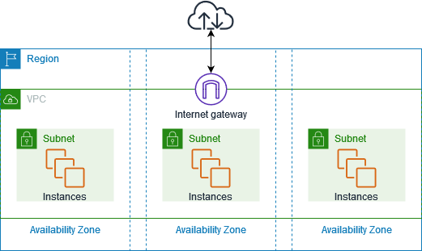
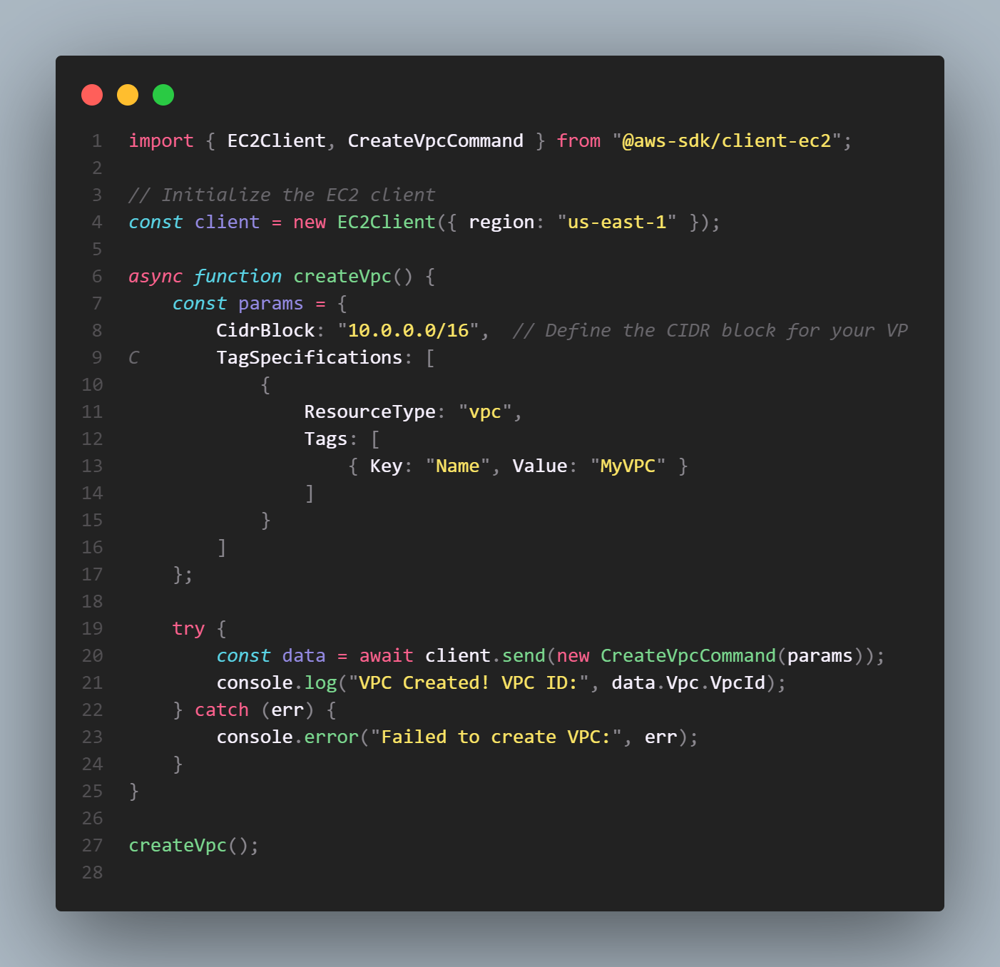

Amazon VPC: Virtual Private Cloud Service
Amazon Virtual Private Cloud (Amazon VPC) lets you provision a logically isolated section of the AWS Cloud where you can launch AWS resources in a virtual network that you define. You have complete control over your virtual networking environment, including selection of your own IP address range, creation of subnets, and configuration of route tables and network gateways.
Architecture of Amazon VPC

VPC Components
A VPC consists of multiple components:
- Subnets: Divide the VPC into smaller network segments.
- Route Tables: Control traffic routing within the VPC.
- Internet Gateway (IGW): Enables communication between instances in the VPC and the internet.
- NAT Gateway: Allows private instances to access the internet without being directly reachable.
- Security Groups & NACLs: Provide traffic filtering and security controls.
- VPC Peering: Connects VPCs for private communication across AWS accounts or regions.
Subnets and Availability Zones
Subnets can be public (accessible from the internet) or private (restricted to internal AWS traffic). Best practice is to distribute subnets across multiple Availability Zones (AZs) for high availability.
Routing and Gateways
Each subnet is associated with a route table that determines where network traffic is directed. Adding an Internet Gateway to the route table makes a subnet public, while using a NAT Gateway allows outbound-only internet access for private subnets.
Steps to Set Up a VPC in AWS
- Create a VPC: Define a CIDR block (e.g., 10.0.0.0/16) for the VPC.
- Create Subnets: Divide the CIDR into public and private subnets across different AZs.
- Configure Route Tables: Set up routes for internal communication and internet/NAT gateways.
- Attach Internet Gateway: Enable internet access for public subnets.
- Set Up Security: Define security groups and network ACLs to control traffic.
- Launch Instances: Deploy EC2 or other services inside the VPC, associating them with the correct subnets and security groups.
How AWS Manages VPC
AWS provides the infrastructure and networking backbone, but you manage your VPC configurations. This includes subnetting, routing, firewall rules, and resource placement, while AWS ensures high availability and durability of the underlying hardware.
Key Features:
- Isolation: Completely isolated network environments.
- Customization: Define IP ranges, subnets, and routing as per your needs.
- Scalability: Easily add new subnets, gateways, and peering connections as workloads grow.
- Security: Fine-grained control over inbound/outbound traffic using security groups and NACLs.
- Integration: Seamless integration with AWS services like EC2, RDS, Lambda, and more.
- Global Reach: Use VPC peering and Transit Gateway for inter-region and cross-account connections.
Amazon VPC is ideal for hosting secure web applications, hybrid cloud architectures, disaster recovery setups, and microservices with strict networking controls.
Node.js Snippet for Creating a VPC

AWS Use Cases for VPC
Secure Web Applications
Run web servers in public subnets with backend databases in private subnets for maximum security.
Hybrid Cloud Deployments
Connect on-premises data centers to AWS over VPN or Direct Connect for hybrid workloads.
Disaster Recovery
Set up standby environments in AWS for failover during on-premises outages.
Microservices and Containerized Workloads
Host microservices using ECS, EKS, or Lambda inside a secure VPC environment.